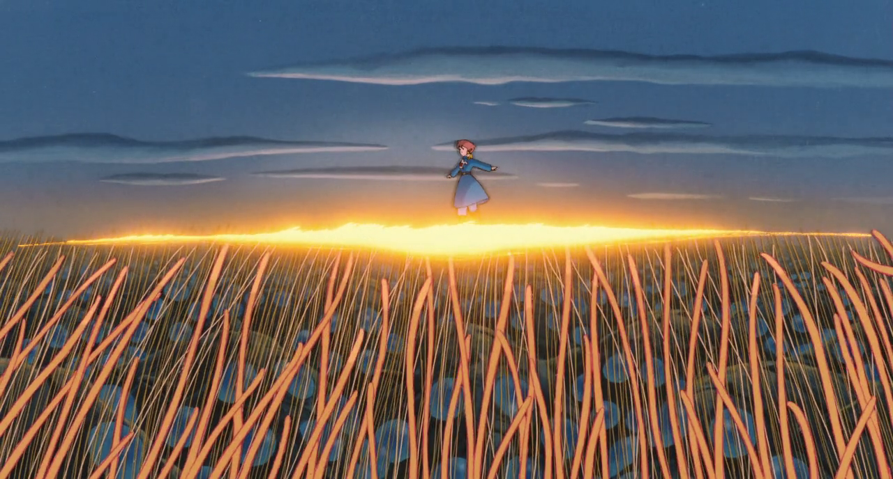

La storia si svolge mille anni dopo i sette giorni del fuoco, una spaventosa guerra termonucleare che ha annientato la civiltà umana e buona parte dell'ecosistema terrestre originale. A causa della distruzione portata dai guerrieri invincibili, giganteschi automi biologici creati dall'uomo e dotati di armi a raggi termonucleari, l'intero pianeta è stato sconvolto e trasformato. I pochi esseri umani superstiti vivono in due grandi regni — Tolmechia e Pejite — e in piccole comunità isolate, mentre gran parte del pianeta è ricoperta da una immensa foresta, la Giungla tossica (o Mar Marcio), in cui vivono enormi e mostruosi insetti mutanti e piante che rilasciano nell'atmosfera spore velenose, minacciando la sopravvivenza degli insediamenti umani. La Giungla tossica si espande lentamente ma inesorabilmente e alcune comunità rimaste, come la Valle del vento, sopravvivono solo perché sopravento rispetto al flusso delle spore rilasciate dalle piante. In questa epoca la tecnologia è regredita a una sorta di Medioevo, sebbene siano sopravvissuti retaggi tecnologici dell'antica civiltà (in particolare alcune macchine volanti e le armi da fuoco). Un'antica leggenda viene tramandata di generazione in generazione e parla di un condottiero vestito di azzurro che camminando su un cielo d'oro porterà l'umanità verso una terra pura e libera dai miasmi della Giungla tossica.
Nella Valle del vento vive Nausicaä, una ragazza determinata e coraggiosa, unica figlia del sovrano Jihl, profondamente amata dal suo popolo. Mentre gran parte degli uomini sopravvissuti alla catastrofe vive in un rapporto conflittuale con la nuova natura minacciosa, Nausicaä, forte del suo amore per ogni forma di vita, cerca di capire le cause del mutamento e la vera essenza della Giungla tossica. Al contrario di chi ritiene che la giungla possa essere combattuta e distrutta col fuoco, Nausicaä comprende che è possibile convivere con essa e che le piante sono rese velenose dall'inquinamento lasciato dall'uomo secoli prima con la guerra nucleare. In un suo laboratorio segreto, infatti, Nausicaä è riuscita a coltivare piante e funghi della giungla del tutto inoffensivi per l'uomo, alimentandoli con acqua pura.
L'armonia della Valle viene tuttavia interrotta dall'improvviso arrivo di una nave volante che si schianta fra i campi dopo essere stata attaccata da insetti giganti. La nave — appartenente all'Impero di Tolmechia — trasporta numerosi prigionieri di guerra del Regno di Pejite e soprattutto uno strano ordigno che sembra vivente. In seguito a questo schianto giungono nella Valle altre navi di Tolmechia, stavolta cariche di soldati. I tolmechiani sono guidati dall'ambizioso Kurotowa che a sua volta obbedisce agli ordini della regina Kushana. Jihl viene ucciso e Nausicaä presa in ostaggio, mentre la popolazione viene precettata per servire Tolmechia nel recupero dell'ordigno. I cittadini della Valle scoprono quindi che i regni di Tolmechia e Pejite sono scesi in guerra l'uno contro l'altro per il possesso dell'ordigno che si rivela essere il cuore dell'ultimo guerriero invincibile rimasto, da cui le opposte fazioni sperano di poter far risorgere la mostruosa macchina vivente, per eliminare i loro nemici e distruggere la giungla. Nausicaä tenta invano d
Nausicaä, tratta in ostaggio insieme a un piccolo contingente di uomini della Valle, riesce a liberarsi durante un combattimento fra la flotta tolmechiana e un caccia di Pejite. Abbattuta, precipita nella Giungla tossica con il pilota pejitiano, che si rivela essere un giovane nobile, Asbel. Sprofondando nelle viscere della Giungla tossica i due scoprono che sotto le radici delle piante l'aria non è più mefitica e scorre acqua limpida: le piante infatti filtrano l'inquinamento causato dall'uomo per lasciare l'ambiente di nuovo pulito. Forti di questa scoperta i due tornano indietro per scongiurare il rischio che il guerriero invincibile venga usato per bruciare la giungla — con la conseguenza di vedere le sue spore diffuse in tutto il mondo dalle fiamme — ma devono constatare che Pejite, ridotta alla disperazione sotto l'attacco di Tolmechia, sta usando gli insetti come arma finale. E dunque che un'orda di mostri-tarlo è stata indirizzata contro la Valle del vento, utilizzando come esca un cucciolo crudelmente ferito, perché spazzi via il cantiere tolmechiano dove il guerriero invincibile sta lentamente rigenerando a partire dal suo nucleo.
Il guerriero invincibile, attivato anzitempo da Kushana, si autodistrugge nello sforzo di utilizzare le sue armi termonucleari contro l'orda di insetti, mentre Nausicaä, recuperato il cucciolo di mostro-tarlo, riesce a fermare l'attacco ma a prezzo della vita. Placati dal sacrificio della ragazza e dalla restituzione del loro cucciolo, i mostro-tarli si fermano e circondano Nausicaä esanime, iniziando a toccarla con i loro tentacoli e sollevandola in cielo. Nell'incredulità del popolo della Valle del vento e dei superstiti degli eserciti invasori, la ragazza riprende vita. La visione di Nausicaä con la veste tinta d'azzurro dal sangue del cucciolo di mostro-tarlo camminare su un tappeto di tentacoli color oro, fanno sì che il popolo riconosca in lei l'incarnazione del condottiero vestito di azzurro che cammina su un cielo d'oro dell'antico mito. L'esercito di Tolmechia si ritira in pace e i superstiti di Pejite si uniscono agli abitanti della Valle, mentre Nausicaä guida il suo popolo alla ricostruzione dalle distruzioni della guerra. Il sacrificio di Nausicaä e il compimento della profezia hanno indicato all'umanità una via di pace, comprensione reciproca e convivenza con la natura.